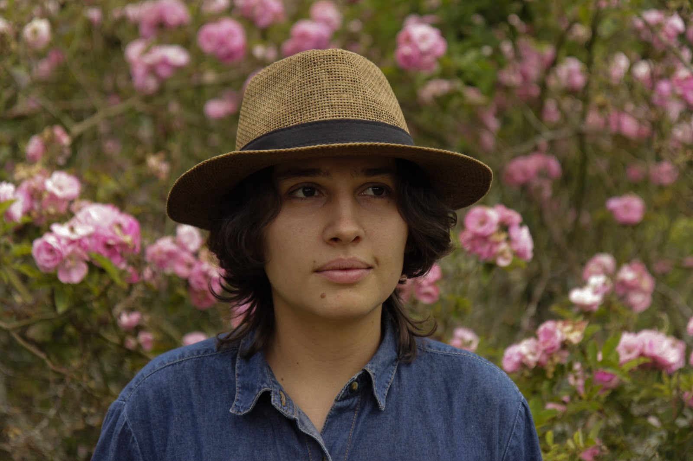

Entre-Nos · Un nombre para volver a encontrarnos. Sembrando lectura en Ovejas desde 2019.
01 / Las raíces
Un nombre guardado en la memoria del pueblo.
Antes de ser biblioteca, Entre-Nos ya era una manera de contarnos.
El nombre viene del antiguo Periódico Entre-Nos, que circuló en Ovejas hasta cerca de 2012. Cuando la biblioteca llegó en 2019, la comunidad recuperó esas palabras: una memoria local que encontraba otra forma de seguir viva.
La semilla ya estaba sembrada. Mariana y un grupo de amigos organizaban cineforos y pequeñas actividades culturales. Una convocatoria nacional, impulsada por una funcionaria de la alcaldía, hizo posible que Ovejas recibiera una Biblioteca Rural Itinerante.
Mariana y Juan Castañeda estuvieron a cargo de recibirla. A finales de ese año, un festival de arte y cultura le dio la bienvenida. Su primera casa fue la Casa Amarilla: un espacio compartido entre amigos, sueños y libros, donde también hubo goteras, dificultades y aprendizajes.
Desde entonces, la BRI ha ido encontrando nuevos lugares para leer el mundo en compañía.

Jessy Mariana Rodríguez Rodríguez Gestora cultural · BRI Entre-Nos
02 / La voz que acompaña
Entre letras y cebada.
Mariana Rodríguez
Estudiante de último semestre de Filología Hispánica, gestora cultural y parte del equipo del Centro Cultural El Ensueño. Desde la llegada de la BRI a Ovejas, en 2019, Mariana está al cuidado de esta biblioteca y de los encuentros que crecen a su alrededor.
También hace cerveza artesanal con su mamá. Entre los libros, la gestión cultural y ese oficio compartido, su historia se escribe en comunidad.
En 2022, una materia universitaria —Didáctica de la Literatura— la llevó a proponer talleres de lectura con mujeres mayores. Al terminar el año, ellas preguntaron si continuarían. La respuesta tomó la forma de un vínculo que sigue reuniéndolas.
Filología Hispánica
Gestión cultural
Lectura en comunidad
03 / El camino · 2019–2025
Cada año, una página sembrada.
Una historia hecha de pausas, regresos y nuevas voces. Abre cada año y recorre sus encuentros.
2019Llegan los libros, empieza la fiesta
Ovejas recibe la Biblioteca Rural Itinerante gracias a una convocatoria nacional. Mariana y Juan Castañeda acompañan su llegada; un festival de arte y cultura celebra la bienvenida. La Casa Amarilla se convierte en su primer hogar.
2020–2022Una pausa entre las páginas
La biblioteca permanece prácticamente inactiva. Las condiciones de la Casa Amarilla, con humedad y goteras que dañaron algunos ejemplares, también hacen difícil sostener los talleres.
2022La lectura vuelve a reunirnos
Nacen el logo y el perfil de Facebook de Entre-Nos. En la Casa Amarilla comienzan los encuentros quincenales con mujeres mayores: memoria, cartografía social, origami y cuento colectivo.
Lo que empieza como un ejercicio universitario se transforma en un proceso que el grupo quiere continuar.
2023Mirar, encuadernar, inventar
Los cineforos, con aproximadamente una película al mes, abren conversaciones. Los talleres de fanzine y encuadernación invitan a crear con las manos y a darles una forma propia a las historias.
2024Los libros salen; la música llega
Continúan los cineforos y talleres. La biblioteca participa en las Fiestas de la Leche con una carpa de libros y la hora del cuento, y recibe una colección donada por la Biblioteca Nacional / Ministerio de Cultura.
Mariana gestiona, a través de la BRI, la cuarta edición del Festival Oveja Negra, un encuentro de música metal.
2025Un teatro, un parque, muchas voces
El grupo de mujeres mayores comienza a reunirse cada martes en El Ensueño. Arranca también la ejecución de un proyecto con el PNUD y la biblioteca amplía sus recorridos:
En el parque de Ovejas: talleres infantiles y juveniles entre marzo y mayo, con susurrófono, cadáver exquisito, prensado botánico, grafiti, diccionario juvenil y origami.
En las escuelas veredales: visitas a La China, Agricol y La Clarita; La Cuchilla figuraba como visita pendiente.
En el Festival Fidel Cano, Letras y Libertad: un periódico colectivo inspirado en el oficio de Fidel Cano.
Alrededor de la música: un taller de composición colectiva.
Por la diversidad y la inclusión: dos días de conversaciones sobre experiencias LGBTIQ+, cartografía de espacios seguros, collage, poesía diversa y una presentación de las gaiteras Muche Muche, de Bello.
04 / Lo que florece entre nosotros
Hay muchas maneras de abrir un libro.
A veces se empieza por una página. Otras, por una planta, una película o un recuerdo que alguien se anima a compartir.
01 · Memoria compartida
Los martes tienen voz de encuentro.
En El Ensueño, las mujeres mayores se reúnen para leer, narrar historias, aprender sobre plantas medicinales y encuadernar sus propias agendas. Ellas mismas se organizan y se turnan el refrigerio y el aseo: también se cuida un lugar haciéndolo propio.
02 · Infancia y territorio
La curiosidad sale a caminar.
Los talleres itinerantes llegan al parque y a las escuelas veredales. Papel, palabras, hojas y dibujos se vuelven una invitación a explorar. La infancia y las personas mayores están en el centro del enfoque de Mariana.
03 · Creación y diversidad
Todas las voces merecen una página.
Cineforos, fanzines, música, poesía y conversaciones sobre diversidad amplían las formas de encontrarse. La biblioteca está abierta a cualquier persona de la comunidad que quiera vincularse, proponer o incluso tomarla prestada por un día.
05 / El álbum
Un pequeño refugio para tantos mundos.
Acércate a los rincones de Entre-Nos. Toca una fotografía para verla completa.
01 / Un nombre que reúne: BRI Entre-Nos.02 / Entre libros, caben muchos caminos.03 / Historias a la espera de otras manos.
BRI Entre-Nos + El Ensueño
La biblioteca pone las historias. El teatro abre la casa.
Entre-Nos es una iniciativa independiente. El Ensueño ofrece un hogar para los encuentros con las mujeres mayores y acompaña algunas de sus iniciativas, como el Festival de Hip Hop. Mariana enlaza estos caminos con su trabajo cultural.
Que tus libros encuentren otras manos.
Un libro que compartes puede abrir un mundo nuevo. Escríbenos para conversar sobre tu donación y coordinar la entrega.